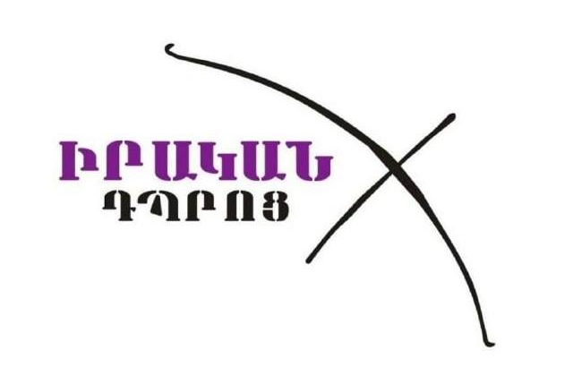

Լոռու մարզի պատմամշակութային ժառանգության համակարգման և թվայնացման հարթակ
Նարեկ Հարությունյան
Լոռու մարզը Հայաստանի հյուսիսային դարպասն է, որը հարուստ է հարյուրավոր եկեղեցիներով, բերդերով և բնության հուշարձաններով։ «ՈւՐՈւ» նախագիծը ստեղծված է որպես միասնական թվային տիրույթ, որը համակարգում է այդ ողջ տեղեկատվությունը։
Մեր նպատակն է ստեղծել մի այնպիսի գործիք, որը թույլ կտա ոչ միայն պահպանել պատմությունը, այլև այն դարձնել հասանելի և գրավիչ ժամանակակից օգտատիրոջ համար՝ օգտագործելով արդի վեբ լուծումներ։
Տեղեկատվությունը տարածված է տարբեր գրական աղբյուրներում, ինչը դժվարացնում է դրա արագ ստացումը:
Բազմաթիվ պատմական կոթողներ չունեն համապատասխան օնլայն ներկայացվածություն և նկարագրություն:
Զբոսաշրջիկների համար հաճախ բարդ է գտնել ճշգրիտ ճանապարհը դեպի քիչ հայտնի մշակութային վայրեր:
Լուծումը. Ստեղծել կենտրոնացված շտեմարան, որտեղ ամեն մի կոթող ունի իր «թվային անձնագիրը»՝ մանրամասն պատմական տվյալներով և տեղադրությամբ:
Օգտագործվել են HTML5 և CSS3 ստանդարտները՝ էջերի կմախքն ու տեսողական ոճը ապահովելու համար։ Հատուկ ուշադրություն է դարձվել CSS Flexbox և Grid համակարգերին՝ ապահովելով սիմետրիկ և կոկիկ դասավորություն։
Յուրաքանչյուր տարր նախագծված է Mobile-First սկզբունքով, ինչը երաշխավորում է հարմարավետությունը սմարթֆոններից օգտվելիս:
JavaScript-ը հանդիսանում է հարթակի շարժիչ ուժը։ Այն պատասխանատու է էջերի միջև սահուն անցումների, պատմական սանդղակի ակնթարթային ֆիլտրացիայի և օգտատիրոջ հետ հետադարձ կապի ապահովման համար։
Ստեղծվել է ինտուիտիվ նավիգացիոն համակարգ, որը հնարավորություն է տալիս գտնել անհրաժեշտ տեղեկատվությունը ընդամենը 2 սեղմումով:
Հարթակի հզորությունն ապահովում է PHP լեզուն՝ MySQL տվյալների բազայի հետ համակցված։ Սա թույլ է տալիս կառավարել մեծածավալ տեղեկատվություն առանց արագագործության կորստի։
XAMPP միջավայրը հնարավորություն է տվել սիմուլյացիա անել իրական սերվերային պրոցեսները Linux միջավայրում՝ ապահովելով տվյալների անվտանգ փոխանակումը։
Օգտագործվել են նուրբ երանգներ և բարձրորակ պատկերներ՝ մշակութային արժեքը ընդգծելու համար։
Թափանցիկ տարրերի և բլյուր էֆեկտների կիրառումը կայքին հաղորդում է թեթևություն և արդիականություն։
Նեոնային լուսային շեշտադրումները օգնում են օգտատիրոջը կենտրոնանալ կարևոր գործողությունների վրա։
Ամբողջ դիզայնը նախապես մոդելավորվել է Figma-ում, ինչը թույլ է տվել խուսափել տեսողական անհամապատասխանություններից կոդավորման փուլում:
Քարտեզագրման համար ընտրվել է Leaflet.js գրադարանը, որն ապահովում է արագագործություն և ճկունություն։ Այն թույլ է տալիս ցուցադրել վայրերը ինտերակտիվ մարկերների միջոցով։
Օգտատերը կարող է տեսնել իր գտնվելու վայրը և ստանալ ուղղություն դեպի ընտրված կոթողը:
Մշակվել է Հայաստանի և հատկապես Լոռու մարզի վեկտորային քարտեզը։ Յուրաքանչյուր շրջան ունի իր յուրահատուկ ինտերակտիվությունը, որը փոխում է գույնը կամ ցույց տալիս լրացուցիչ տվյալներ մկնիկի հպումից։
Հարթակի առանցքային առանձնահատկություններից է պատմական ժամանակագրական սանդղակը։ Սա թույլ է տալիս օգտատիրոջը «զտել» Լոռու պատմությունը ըստ դարաշրջանների:
Յուրաքանչյուր փուլ ներկայացված է իրեն բնորոշ ճարտարապետական ոճով և պատմական համատեքստով:
Նախագծի մշակումը կատարվել է բացառապես Linux (Ubuntu) միջավայրում՝ օգտվելով տերմինալի հնարավորություններից:
Git-ի միջոցով կատարվել է կոդի յուրաքանչյուր փոփոխության արձանագրում և տարբերակների կառավարում:
Ամբողջ նախագիծը սինխրոնացված է GitHub-ի հետ, ինչը երաշխավորում է կոդի անվտանգությունը և հասանելիությունը:
Հաջորդ փուլում նախատեսվում է ներդնել AR (Augmented Reality) տեխնոլոգիան, որը թույլ կտա օգտատերերին տեսնել վայրերի վերակառուցված տեսքը իրական ժամանակում իրենց հեռախոսների միջոցով:Նաեւ հետագայում կաշխատի Մանիի միջոցով
Հարթակը նախագծված է մոդուլային սկզբունքով, ինչը հնարավորություն է տալիս հեշտությամբ ավելացնել Հայաստանի մյուս մարզերը՝ դարձնելով այն համահայկական մշակութային պորտալ:
Տվյալների ճշգրտություն և պատմական համապատասխանություն:
Էջերի միջին բեռնման արագություն:
Օգտատիրոջ համար պարզ և մատչելի ինտերֆեյս:
«ՈւՐՈւ»-ն պարզապես կայք չէ, այն մշակութային ինքնության թվային պահապանն է: